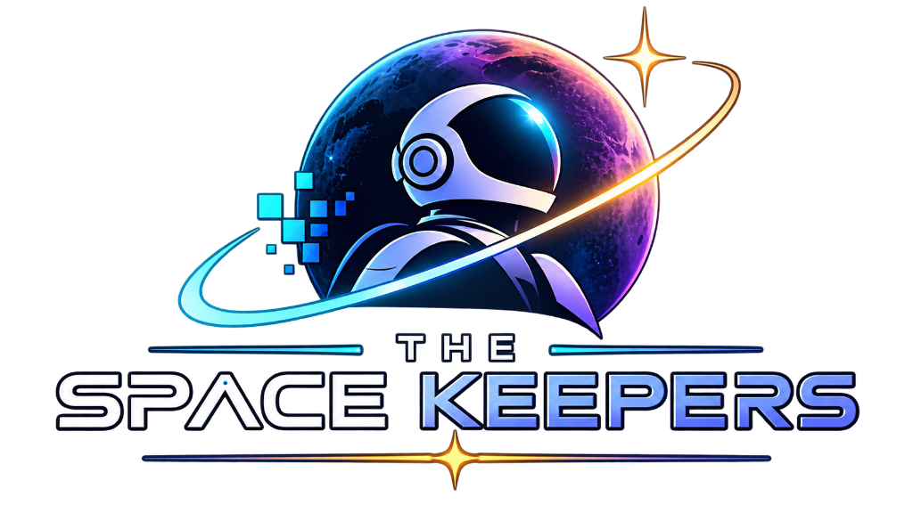

مهجورة لكن غير منسية: سرد قصص معدات ناسا المتروكة على القمر والمريخ
ما زالت آثار بعثات ناسا شاهدة على أعظم مغامرات الإنسان خارج الأرض.
نبذة عن المركبة وقصتها.
أدخل اسمك لإصدار وتحميل شهادة التميز الخاصة بك من فريق The Space Keepers.